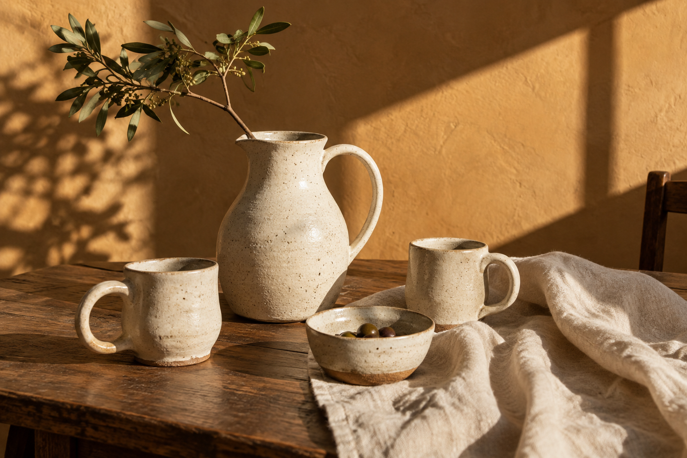

Mugs & cups
For the first sip, the second coffee, and the conversations that linger.
Hold a little warmth.JESS CERAMICS · FOR THE EVERYDAY
Simple forms. Earthy textures. Ceramics that make the little moments feel a little more special.
Explore the collection
THE COLLECTION
A place on your table.
A small moment to call your own.
For the first sip, the second coffee, and the conversations that linger.
Hold a little warmth.Quietly beautiful forms for everyday breakfasts and long, shared dinners.
Make room for the everyday.A few stems, a favorite corner, a simple shape that makes a space feel like home.
Let a little beauty in.THE JESS PHILOSOPHY
We believe the objects around us can invite us to pause. To enjoy the coffee while it’s still warm. To set the table just because. To find a little beauty in the familiar.
That’s the spirit of Jess Ceramics: considered pieces, a softer pace, and a home that feels like you.